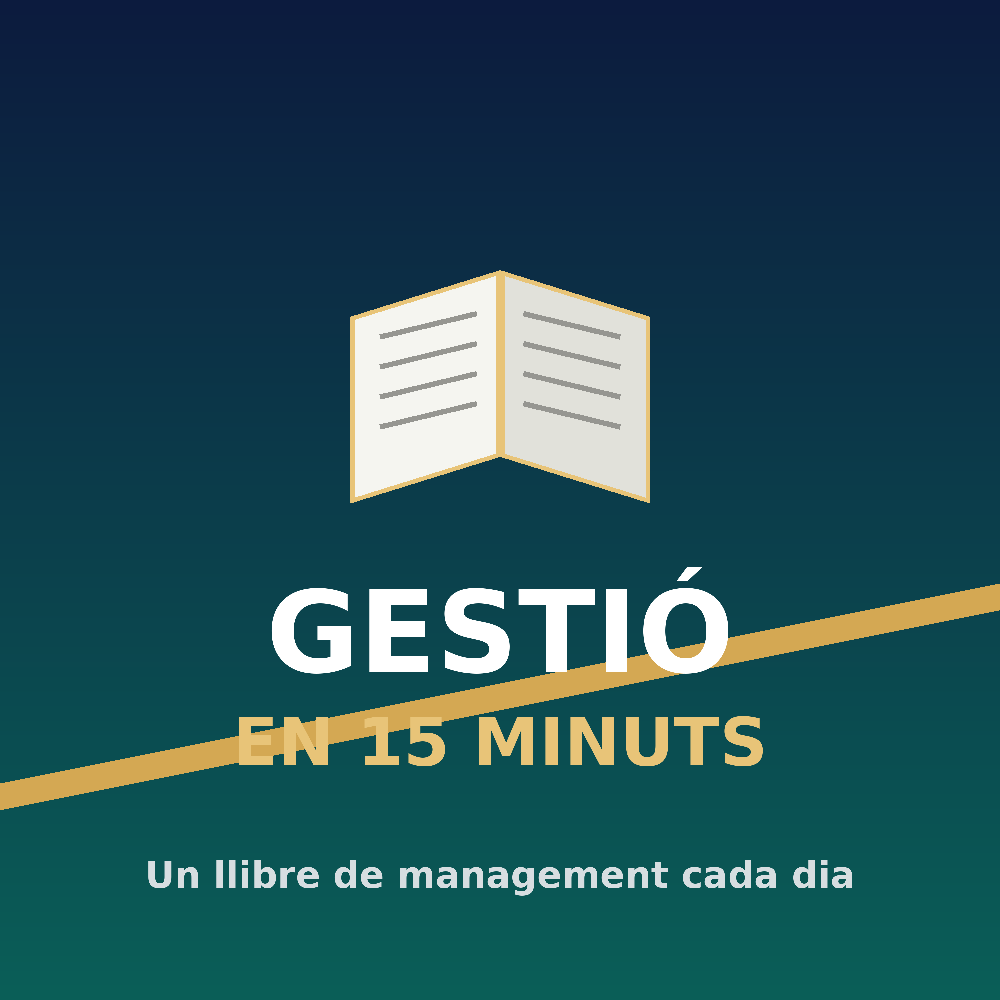

Podcast diari · Català
Cada dia, un gran llibre de gestió empresarial resumit en un quart d'hora.
🎧 Escolta'l a Apple Podcasts 🎵 Escolta'l a Spotify Copia l'adreça del feed✓ Adreça copiada
Si el botó no obre l'app Podcasts: copia l'adreça, i a Podcasts ves a Biblioteca → ⋯ → «Segueix un programa per URL» i enganxa-la.
https://ramonramon1973.github.io/podcast-llibres/feed.xml